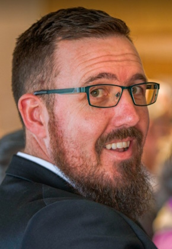

Speaker
Logan Hagoort

Logan Hagoort, the Minister at Covenant Presbyterian Church in Manurewa, has been a serving in the Grace Presbyterian Church for seven years. He is married to Josella and they have the joy of raising four children while living a little south of Auckland on a life style block.
Logan has done a variety of different things in his life, from dairy farming to managing a jewellery store and even selling vacuum cleaners door to door! In 2010, he felt called to give it all up and pursue pastoral ministry. He studied at Laidlaw College in Auckland and graduated with a bachelor and post-graduate diploma in theology. Currently, on top of being a Minister he also teaches Biblical Greek at Grace Theological College in Auckland and is the chairman of a Christian education trust.
As a minister, Logan is passionate about living to glorify God by enjoying him forever through dependence upon Him, devotion to Him, and delight in Him.
Talks
We live in a society where we desire and strive for joy, and yet we find it strangely elusive. For all our technological prowess and modern marvels, we don’t tend to ‘get there’ much. And when we do, joy tends to last for such a short time—either because the moment passes, or because we get quickly bored. In a way, we live in a world now that is hyper-stimulated and used to getting what they want at the touch of a button… and yet they are more depressed than ever before. Ecclesiastes illustrates this well.
Why is Christianity any different? What does Jesus provide that these earthly things don’t?
Schedule

The conference schedule for the day is below.
| 9:00 am |
Registration opens |
| 9:30 am |
Welcome and Introductions |
| 9:40 am |
Talk 1 |
| 10:30 am |
Morning Tea |
| 11:00 am |
Talk 2 |
| 12:00 pm |
Lunch |
| 1:00 pm |
Talk 3 |
| 1:50 pm |
Afternoon Tea |
| 2:20 pm |
Talk 4 |
| 3:00 pm |
Questions |
| 3:30 pm |
Closing |
Location

New Plymouth Central Baptist Church
89 Liardet Street
New Plymouth
New Zealand
Donations
This conference is offered free for those who attend. We desire all who come to be edified and built up into Christ our head.
But as a result, the costs need to be met by private donations. If you are willing or able, please consider contributing so that
we can continue each year to minister through this medium. You can give electronically:
Account: Reformed Church of New Plymouth
B/A Number: 06-0729-0610778-04
Please put ‘Kurios’ in the reference field
More Information

What is the Kurios Conference?
This conference gets its name from the Greek word ‘κυριος’ which means Lord. It is the name that was given to Christ “so that at the name of Jesus every knee should bow, in heaven and on earth and under the earth, and every tongue confess that Jesus Christ is Lord, to the glory of God the Father.’ (Philippians 2:10-11)
It is our intent each year to study topics which relate directly to the Lordship of Christ Jesus; to answer two primary questions:
- Who is our Lord and God?
- How should we live as citizens of His kingdom?
We invite you to join us for the annual Kurios Conference. It’s our desire that, united as Christians, we can fix our eyes on our Lord and Savior Jesus Christ.
This conference is offered free of charge and includes lunch and refreshments.
For more information, please refer to the following resources:
For information on previous years conferences click on the links below:
Further enquiries
If you have any other questions you can contact us at:
Phone: (022) 309 8293
Email: enquiries@kurios.nz
2023 : Love

Since the age of 53, Pieter van Huyssteen has been serving as Minister of the Word and Sacraments — first in the Reformed Church of Foxton (7 years), and then in the Reformed Church of Wainuiomata (for the past 9 years).
Before he entered the ministry, Dr Pieter van Huyssteen spent a lifetime lecturing and teaching a variety of subjects at various universities and Bible colleges in South Africa and in New Zealand. Some of these courses were: Classical and New Testament Greek; six Semitic languages of which the most important ones are: Biblical Hebrew and Biblical Aramaic; Church History, Old & New Testament Exegesis; and Old & New Testament Survey, as well as International Phonetics to prospective missionaries.
As minister and pastor, Pieter is passionate about teaching the whole Bible on God’s terms and for His glory to old and young, as well as comforting those in hardship with words from the holy Scriptures. God has blessed Pieter and Annette with 44 years of blessed marriage, and with three children and four grandchildren.
Talks
Talk 1: “In Awe of His Great Love” (Philippians 2:5-8): Many people struggle these days to find love, and struggle to understand what it even means to be loved. What is so significant about the Christian faith that God expresses his great love for us? What is the fitting response to such a great love?
Session 1 Video
Talk 2: “Living in Agreement with My Profession” (Romans 6:1-14): It is well understood that love is not just a feeling but an action. God displays his love for us in countless ways. What does our love look like to him then? If we profess to love Him, how will people see that love expressed in our lives?
Session 2 Video
Talk 3: “How do I know He loves me?” (2 Peter 1:3-11): Despite all that the Scriptures tell us about the love of God, many Christians struggle with assurance of their salvation. Even David cried out many times in the Psalms from a downcast soul. What do we do when we feel God is absent?
Session 3 Video
Talk 4: “God’s Loved Ones Will Persevere” (Philippians 2:12-18): Not only is love productive, but it causes us to reflect the nature and work of our God. We are to be lights to a world in the midst of a terrible darkness… a world unfamiliar with true love. And even when doing this causes terrible pain, we always have reason to rejoice in the God of our salvation.
Session 4 Video
2021 : Hope

Dr. Michael Flinn became a minister in 1988 and has been used by God to plant churches in Pukekohe and Christchurch. He most recently served as a minister at the Reformed Church of Palmerston North, and has also enjoyed working as a tutor and lecturer at the Reformed Theological College in Geelong, Australia.
His greatest passion is knowing and loving his God. He is particularly passionate about how the Word of God gives us wisdom and help in times of trouble. Regardless of what life brings, Dr Flinn is convinced that Scripture teaches that God is working all things for the good of those that love him (Rom 8:28).
Michael is excited to speak to us about “Hope”. This is a powerful and appropriate topic for us as a society, especially in the past couple of years. Although international statistics that say suicide rates are dropping, studies this past year indicate rising rates of suicide even among high-school students. Is there a solution to such a devastating problem? Dr Flinn will show us that hope is not empty—but when directed at a champion who is trustworthy, good, and powerful to save, we can find freedom and peace for our souls.
Talks
What is Hope?: We live in a society that is well acquainted with hopelessness—but less familiar with hope. Part of the dilemma we’ve faced is that we have placed our hope in all the wrong heroes. Why is hope in God different?
Session 1 Video
Does God Care? A common question about Christianity is: “How can God be loving if so much bad happens in the world?” Does the Bible have a clear answer? Why are our lives in a mess? Is God involved here or not? Does he care?
Session 2 Video
The Solution: The hope we have as Christians is not simply a matter of looking to our future inheritance that we receive in Christ when we die. Hope has a crucial part to play in how we view our earthly struggle. This side of heaven we are called to share in the sufferings of Christ for his glory. This is neither empty nor futile.
Session 3 Video
Where to from here?: As Christians who have hope, what part does God want us to have in our society? Does he give us a role beyond evangelism? What does this look like?
Session 4 Video
2019 : Transforming Truth

Dr Phillip Scheepers is the vice-principal of the Reformed Theological Seminary in Geelong, Australia where he lectures on Missions and Church History. After his training in the ministry in South Africa, he worked in mission work locally before moving to London. He was there for 8 years working for Veritas College, where he established training ministries for local church leaders in the Arab world.
In 2007 he moved to Australia in order to secure support for the Veritas training program and joined the Reformed Theological College in 2010.
Phillip spoke to us about “Truth” as we consider the place of Christianity in our modern society, and how this impacts on who we are in relation to God, ourselves and others. Without a real grounding in Biblical truth we are simply cast adrift and tossed in all directions, which is something we see all around us today! The truth about God and our Lord is directly relevant to every aspect of our lives.
Talks
Truth as God’s Truth: An overview of Biblical teaching on truth and why we can trust God’s Word as true.
Session 1 Slides
Truth and the Self: How does God’s truth impact how we view ourselves, i.e. a ‘biblical anthropology’, how does this differ from society’s views of personhood. Why the Biblical view makes sense and some areas of practical application.
Session 2 Slides
Truth and Relationships: What does the Bible say about how we interact with one another? How the pursuit of your potential leads to ‘a war of all against all’ and how Biblical truth can be a powerful corrective to this - i.e. love and serve one another
Session 3 Slides
Truth and Society: Answering the ‘so what’ question. How does believing in Biblical truth impact the way in which we view and seek to transform our society. How can we do this?
Session 4 Slides
2018 Conference: Worship

After an early career as a university lecturer in Soil Science, Andrew Young was called into pastoral ministry in 1981. In 1995 he was asked to serve as founding Principal of Grace Theological College in Auckland and continued serving in this position for 13 years. Since 2012 to the present Andrew is a director of the Ezra Ministry, a writing, research and teaching ministry committed to promoting the spiritual development of leaders. His passion is to help Christians know and experience God more deeply in their personal lives and ministries.
Talks
Where Worship Fits: What place does worship play in the life of a Christian? What is worship? These are critical questions to ask and answer today. (1 Peter 2:4-5)
Session 1 Video Session 1 Slides
The God we Worship: Worship is a response to God’s self-revelation. But what is God like? Our perception of God has an enormous influence on how we live and worship. (Exodus 20:3-6; 1 Thessalonians 1:9-10)
Session 2 Video Session 2 Slides
The Difference Jesus Makes: Jesus himself is the truest worshipper that has ever lived. What influence does his life and work make on the way we worship God? (Mark 1:35-39; Hebrews 10:19-22)
Session 3 Video Session 3 Slides
Private, Family and Corporate Worship: How does our understanding of worship influence these three traditionally accepted forms of worship? Are they still valid and important for us today? (Deuteronomy 6:4-9; Matthew 6:5-6; Psalm 22:22-24)
Session 4 Video Session 4 Slides